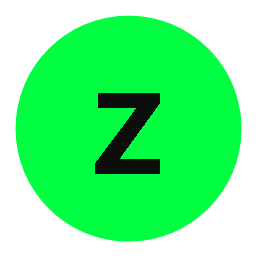

Zoom 1×–8×
Sigue el cursor con precisión en multi-monitor y pantallas HiDPI.
Accesibilidad · Windows · Open source
Lupa de sistema rápida para baja visión. Zoom 1x–8x, multi-monitor, filtros de color y atajos personalizables. Sin publicidad ni telemetría.
Animación · Modo Lupa · sigue el cursor · zoom en vivo
// funciones
Cinco capacidades. Sin ruido.
Sigue el cursor con precisión en multi-monitor y pantallas HiDPI.
Usas otras apps con la lupa activa: los clics llegan al escritorio.
Círculo al cursor o panel fijo en esquina. Cambio al instante.
Inversión, contraste, grises y opciones para daltonismo.
Zoom, modo y ajustes desde el teclado. Todo reasignable.
También: bandeja del sistema · inicio con Windows · sin telemetría · 60 FPS
// modos
Lupa o panel en esquina. Cambia con Ctrl + Alt + M.
Círculo que sigue el cursor y amplía lo que miras. Ideal para el día a día.
Panel fijo en una esquina. Amplía la zona del cursor sin tapar toda la pantalla.
// prueba
Elige modo, mueve el cursor sobre la escena. Simulación web: en Windows la captura es del sistema real.
Reunión de accesibilidad
Mañana 10:00 · sala B
Adjunto: agenda.pdf

Icono de la app
Amplía imágenes, iconos y UI, no solo texto.
Celda C7 · Total $4.280
Escritorio de práctica · mueve el cursor por ventanas e imágenes
Lupa = círculo al cursor · Acoplado = panel fijo · área ampliada de práctica
// filtros
Arrastra el divisor: texto normal vs. alto contraste (como un filtro de Forzen).
El presente acuerdo establece las condiciones de uso del software. La letra pequeña suele ser difícil de leer en pantallas con poco contraste o fatiga visual.
El presente acuerdo establece las condiciones de uso del software. La letra pequeña suele ser difícil de leer en pantallas con poco contraste o fatiga visual.
// atajos
Haz clic en la caja y prueba Ctrl + Alt + ↑ / ↓. Es una demo de la página (no los hooks globales de Windows).
Texto de ejemplo. Crece con el atajo (máx. 1.75×).
Clic aquí · Ctrl+Alt+↑ o ↓
// roadmap
El proyecto sigue vivo. Ideas en el radar para v1.3 y más allá.
Ampliar automáticamente lo que tiene el foco de teclado, no solo el cursor.
Reducir avisos de SmartScreen con firma de código y reportes VT actualizados.
Priorizamos issues y peticiones reales de usuarios con baja visión.
// empezar
Sin cuentas, sin tiendas raras, sin bloatware.
Pulsa Descargar Forzen. Obtienes un instalador de Windows (doble clic).
Sigue el asistente: Siguiente → Instalar. Acepta permisos si Windows los pide.
Forzen queda en el menú Inicio. Icono en la bandeja. Sin terminal ni Java aparte.
// atajos
Valores por defecto. Todos reasignables en Ajustes.
Personaliza cada atajo en Ajustes → Controles.
// descargar
Sin comandos. Sin instalar Java a mano. Solo el asistente de Windows.
Forzen para Windows 10 y 11
Pulsa el botón verde. Se baja Forzen-Setup a tu carpeta de Descargas.
Haz doble clic en el archivo. Se abre el asistente de Windows (Siguiente / Instalar).
Si Windows pregunta “¿Desea permitir…?”, pulsa Sí. Es el control de seguridad habitual.
Forzen queda en el menú Inicio y en la bandeja del sistema. Ya puedes usar la lupa.
Es normal en programas nuevos sin certificado de pago. Pulsa Más información y luego Ejecutar de todos modos. Forzen es código abierto y no instala publicidad.
No. Solo descarga, doble clic e instalar. Como cualquier otra app de Windows.
Configuración de Windows → Aplicaciones → Forzen → Desinstalar. También desde el menú Inicio.